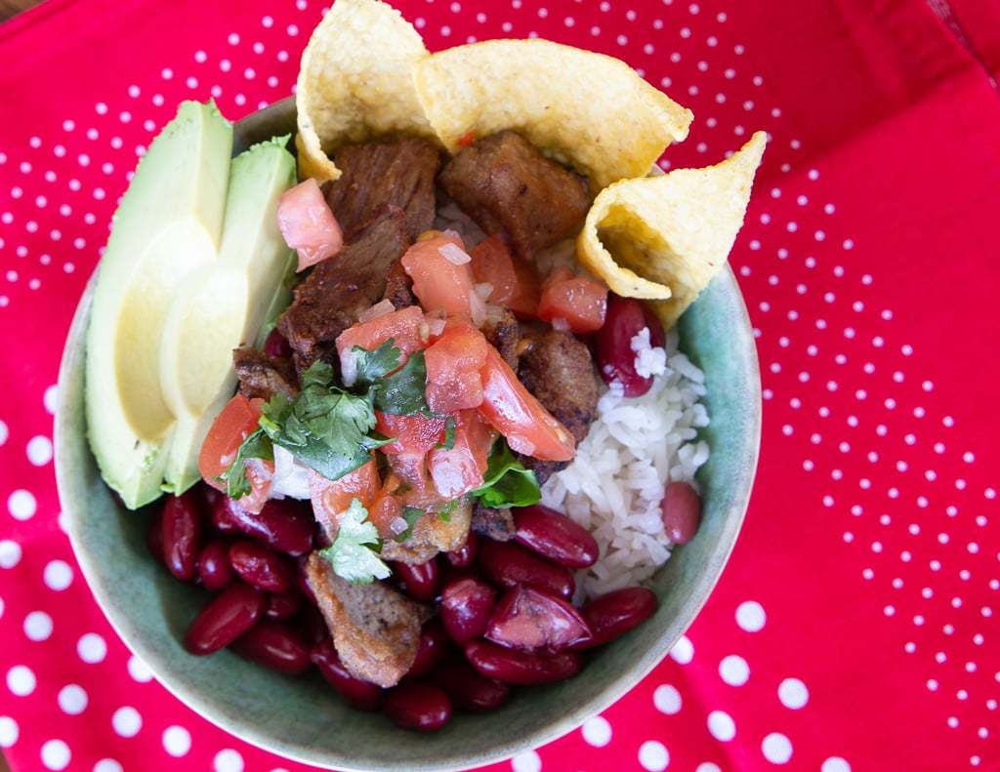

The Costa Rican chifrijo, much like its name, is a mix of several Costa Rican recipes, and it’s a beloved dish throughout the country. The word chi-frijo is a combination of two Spanish words, chicharrón (fried pork belly) and frijoles (beans). Not quite soup, not quite dry dish, its a combination of flavors distinctly Costa Rican.